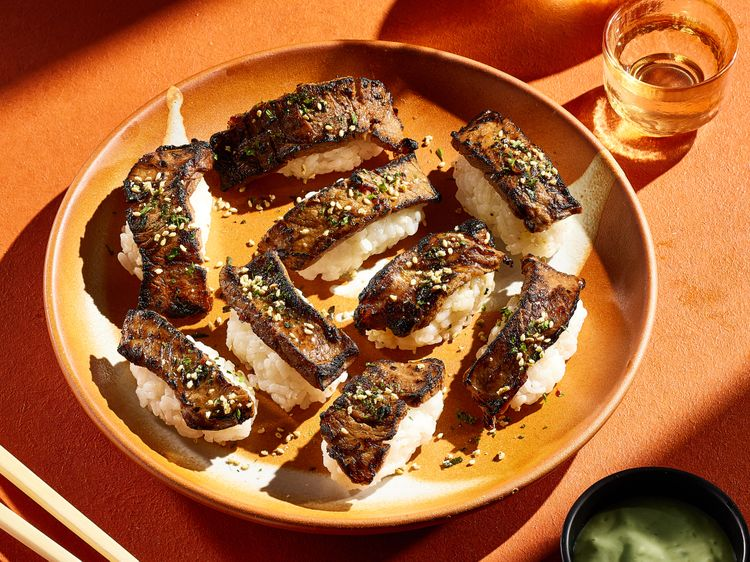

“Aburi,” the technique applied to this aburi steak, means flame-seared in Japanese. The technique is often applied to raw fish, but it works well for tender, marbled beef cuts, too. A butane torch lets you customize the doneness. Torch less or more depending on how charred you like it.